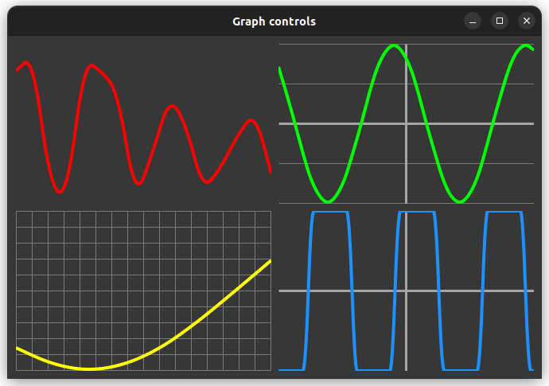

|
xtd
0.2.0
|
Loading...
Searching...
No Matches
graph_control.cpp
demonstrates how to create a custom control with xtd::forms::user_control control for create own graph.
- Windows
- macOS

- Gnome


#include <xtd/forms/application>
#include <xtd/forms/user_control>
#include <xtd/random>
#include <xtd/startup>
using namespace xtd;
using namespace xtd::drawing;
using namespace xtd::forms;
public:
private:
float signal_ = .0f;
date_time time_;
};
using signal_generated_event_handler = generic_event_handler<const signal_generated_event_args&>;
public:
~signal_generator_base() {enabled(false);}
bool enabled() const noexcept {return enabled_;}
signal_generator_base& enabled(bool value) noexcept {
if (enabled_ == value) return *this;
enabled_ = value;
if (enabled_) generator_result_ = generator_.begin_invoke();
else generator_.end_invoke(generator_result_);
return *this;
}
interval_ = value;
return *this;
}
event<signal_generator_base, signal_generated_event_handler> signal_generated;
protected:
void on_signal_generated(const signal_generated_event_args& e) {signal_generated(*this, e);}
virtual float next_signal() noexcept = 0;
private:
bool enabled_ = false;
time_span interval_ = 100_ms;
delegate<void()> generator_ {[&] {
while(enabled_) {
threading::thread::sleep(interval_);
on_signal_generated({next_signal(), date_time::now()});
}
}};
async_result generator_result_;
};
class random_signal_generator : public signal_generator_base {
protected:
float next_signal() noexcept override {return rand_.next(-1.0f, 1.0f);}
private:
};
class sine_wave_signal_generator : public signal_generator_base {
protected:
float next_signal() noexcept override {
auto result = sinuses_[index_++];
if (index_ == sinuses_.size()) index_ = 0;
return result;
}
private:
const std::vector<float> sinuses_ = {.0f, .38f, .71f, .92f, 1.0f, .92f, .71f, .38f, .0f, -.38f, -.71f, -.92f, -1.0f, -.92f, -.71f, -.38f};
size_t index_ = 0;
};
class max_min_signal_generator : public signal_generator_base {
protected:
float next_signal() noexcept override {
auto result = sinuses_[index_++];
if (index_ == sinuses_.size()) index_ = 0;
return result;
}
private:
const std::vector<float> sinuses_ = {1.0f, 1.0f, 1.0f, 1.0f, 1.0f, 1.0f, 1.0f, 1.0f, -1.0f, -1.0f, -1.0f, -1.0f, -1.0f, -1.0f, -1.0f, -1.0f};
size_t index_ = 0;
};
public:
graph_control() {
double_buffered(true);
}
graph_control& signal_trace_color(color value) noexcept {
signal_trace_color_ = value;
return *this;
}
float signal_trace_width() const noexcept {return signal_trace_width_;}
graph_control& signal_trace_width(float value) {
signal_trace_width_ = value;
return *this;
}
color grid_horizontal_line_color() const noexcept {return grid_horizontal_line_color_.value_or(back_color().is_dark() ? color::light(back_color()) : color::dark(back_color()));}
graph_control& grid_horizontal_line_color(color value) noexcept {
grid_horizontal_line_color_ = value;
return *this;
}
graph_control& grid_horizontal_line_color(std::nullptr_t) noexcept {
grid_horizontal_line_color_.reset();
return *this;
}
int grid_horizontal_line_spacing() const noexcept {return grid_horizontal_line_spacing_;}
graph_control& grid_horizontal_line_spacing(int value) {
grid_horizontal_line_spacing_ = value;
return *this;
}
bool grid_horizontal_line_visible() const noexcept {return grid_horizontal_line_visible_;}
graph_control& grid_horizontal_line_visible(bool value) {
grid_horizontal_line_visible_ = value;
return *this;
}
float grid_horizontal_line_width() const noexcept {return grid_horizontal_line_width_;}
graph_control& grid_horizontal_line_width(float value) {
grid_horizontal_line_width_ = value;
return *this;
}
color grid_vertical_line_color() const noexcept {return grid_vertical_line_color_.value_or(back_color().is_dark() ? color::light(back_color()) : color::dark(back_color()));}
graph_control& grid_vertical_line_color(color value) noexcept {
grid_vertical_line_color_ = value;
return *this;
}
graph_control& grid_vertical_line_color(std::nullptr_t) noexcept {
grid_vertical_line_color_.reset();
return *this;
}
int grid_vertical_line_spacing() const noexcept {return grid_vertical_line_spacing_;}
graph_control& grid_vertical_line_spacing(int value) {
grid_vertical_line_spacing_ = value;
return *this;
}
bool grid_vertical_line_visible() const noexcept {return grid_vertical_line_visible_;}
graph_control& grid_vertical_line_visible(bool value) {
grid_vertical_line_visible_ = value;
return *this;
}
float grid_vertical_line_width() const noexcept {return grid_vertical_line_width_;}
graph_control& grid_vertical_line_width(float value) {
grid_vertical_line_width_ = value;
return *this;
}
color x_axis_line_color() const noexcept {return x_axis_line_color_.value_or(fore_color().is_dark() ? color::light(fore_color()) : color::dark(fore_color()));}
graph_control& x_axis_line_color(color value) noexcept {
x_axis_line_color_ = value;
return *this;
}
graph_control& x_axis_line_color(std::nullptr_t) noexcept {
x_axis_line_color_.reset();
return *this;
}
bool x_axis_line_visible() const noexcept {return x_axis_line_visible_;}
graph_control& x_axis_line_visible(bool value) {
x_axis_line_visible_ = value;
return *this;
}
float x_axis_line_width() const noexcept {return x_axis_line_width_;}
graph_control& x_axis_line_width(float value) {
x_axis_line_width_ = value;
return *this;
}
color y_axis_line_color() const noexcept {return y_axis_line_color_.value_or(fore_color().is_dark() ? color::light(fore_color()) : color::dark(fore_color()));}
graph_control& y_axis_line_color(color value) noexcept {
y_axis_line_color_ = value;
return *this;
}
graph_control& y_axis_line_color(std::nullptr_t) noexcept {
y_axis_line_color_.reset();
return *this;
}
bool y_axis_line_visible() const noexcept {return y_axis_line_visible_;}
graph_control& y_axis_line_visible(bool value) {
y_axis_line_visible_ = value;
return *this;
}
float y_axis_line_width() const noexcept {return y_axis_line_width_;}
graph_control& y_axis_line_width(float value) {
y_axis_line_width_ = value;
return *this;
}
size_t signals_max_size() const noexcept {return signals_max_size_;}
graph_control& signals_max_size(size_t value) {
signals_max_size_ = value;
while (values_.size() > signals_max_size_)
values_.erase(values_.begin());
return *this;
}
void add_value(float value) {
values_.push_back(value);
if (values_.size() > signals_max_size_) values_.erase(values_.begin());
begin_invoke([self=this] {self->invalidate();});
}
protected:
user_control::on_paint(e);
e.graphics().smoothing_mode(drawing2d::smoothing_mode::anti_alias);
auto x = .0;
auto step = as<float>(e.clip_rectangle().width()) / (signals_max_size_ -1);
auto points = std::vector<point_f> {};
for (auto value : values_) {
points.emplace_back(x, y - value * height);
x += step;
}
if (points.size() >= 2) e.graphics().draw_curve(pen {signal_trace_color_, signal_trace_width_}, points);
}
private:
auto grid_horizontal_line_color = grid_horizontal_line_color_.value_or(back_color().is_dark() ? color::light(back_color()) : color::dark(back_color()));
auto grid_vertical_line_color = grid_vertical_line_color_.value_or(back_color().is_dark() ? color::light(back_color()) : color::dark(back_color()));
if (grid_horizontal_line_visible_)
graphics.draw_line(pen {grid_horizontal_line_color, grid_horizontal_line_width_}, point(rect.left(), y), point(rect.right(), y));
if (grid_vertical_line_visible_)
graphics.draw_line(pen {grid_vertical_line_color, grid_vertical_line_width_}, point(x, rect.top()), point(x, rect.bottom()));
}
auto x_axis_line_color = x_axis_line_color_.value_or(fore_color().is_dark() ? color::light(fore_color()) : color::dark(fore_color()));
auto y_axis_line_color = y_axis_line_color_.value_or(fore_color().is_dark() ? color::light(fore_color()) : color::dark(fore_color()));
if (x_axis_line_visible_) graphics.draw_line(pen {x_axis_line_color, x_axis_line_width_}, rect.left(), rect.top() + rect.height() / 2, rect.width(), rect.top() + rect.height() / 2);
if (y_axis_line_visible_) graphics.draw_line(pen {y_axis_line_color, y_axis_line_width_}, rect.left() + rect.width() / 2, rect.top(), rect.left() + rect.width() / 2, rect.top() + rect.height());
}
std::vector<float> values_;
color signal_trace_color_ = fore_color();
float signal_trace_width_ = 4.0f;
std::optional<color> grid_horizontal_line_color_;
int grid_horizontal_line_spacing_ = 20;
bool grid_horizontal_line_visible_ = true;
float grid_horizontal_line_width_ = 1.0f;
std::optional<color> grid_vertical_line_color_;
int grid_vertical_line_spacing_ = 20;
bool grid_vertical_line_visible_ = true;
float grid_vertical_line_width_ = 1.0f;
std::optional<color> x_axis_line_color_;
bool x_axis_line_visible_ = true;
float x_axis_line_width_ = 3.0f;
std::optional<color> y_axis_line_color_;
bool y_axis_line_visible_ = true;
float y_axis_line_width_ = 3.0f;
size_t signals_max_size_ = 48;
};
public:
static void main() {
application::run(form1 {});
}
form1() {
client_size({670, 430});
text("Graph controls");
generator1_.enabled(true);
generator1_.signal_generated += {*this, &form1::on_generator1_signal_generated};
generator2_.enabled(true);
generator2_.interval(20_ms);
generator2_.signal_generated += {*this, &form1::on_generator2_signal_generated};
generator3_.enabled(true);
generator3_.interval(200_ms);
generator3_.signal_generated += {*this, &form1::on_generator3_signal_generated};
generator4_.enabled(true);
generator4_.interval(50_ms);
generator4_.signal_generated += {*this, &form1::on_generator4_signal_generated};
graph_control1_.grid_horizontal_line_visible(false);
graph_control1_.grid_vertical_line_visible(false);
graph_control1_.location({10, 10});
graph_control1_.parent(*this);
graph_control1_.signals_max_size(16);
graph_control1_.signal_trace_color(color::red);
graph_control1_.size({321, 201});
graph_control1_.x_axis_line_visible(false);
graph_control1_.y_axis_line_visible(false);
graph_control2_.grid_horizontal_line_spacing(50);
graph_control2_.grid_vertical_line_visible(false);
graph_control2_.location({340, 10});
graph_control2_.parent(*this);
graph_control2_.signals_max_size(32);
graph_control2_.signal_trace_color(color::lime);
graph_control2_.size({321, 201});
graph_control3_.location({10, 220});
graph_control3_.parent(*this);
graph_control3_.signals_max_size(8);
graph_control3_.signal_trace_color(color::yellow);
graph_control3_.size({321, 201});
graph_control3_.x_axis_line_visible(false);
graph_control3_.y_axis_line_visible(false);
graph_control4_.grid_horizontal_line_visible(false);
graph_control4_.grid_vertical_line_visible(false);
graph_control4_.location({340, 220});
graph_control4_.parent(*this);
graph_control4_.signal_trace_color(color::dodger_blue);
graph_control4_.size({321, 201});
form_closed += [&] {
generator1_.stop();
generator2_.stop();
generator3_.stop();
generator4_.stop();
};
}
private:
void on_generator1_signal_generated(object& sender, const signal_generated_event_args& e) {
graph_control1_.add_value(e.signal());
}
void on_generator2_signal_generated(object& sender, const signal_generated_event_args& e) {
graph_control2_.add_value(e.signal());
}
void on_generator3_signal_generated(object& sender, const signal_generated_event_args& e) {
graph_control3_.add_value(e.signal());
}
void on_generator4_signal_generated(object& sender, const signal_generated_event_args& e) {
graph_control4_.add_value(e.signal());
}
random_signal_generator generator1_;
sine_wave_signal_generator generator2_;
sine_wave_signal_generator generator3_;
max_min_signal_generator generator4_;
graph_control graph_control1_;
graph_control graph_control2_;
graph_control graph_control3_;
graph_control graph_control4_;
};
startup_(form1::main);
Represents an instant in time, typically expressed as a date and time of day.
Definition date_time.h:79
Defines an object used to draw lines and curves. This class cannot be inherited.
Definition graphics.h:70
void draw_line(const xtd::drawing::pen &pen, const xtd::drawing::point &pt1, const point &pt2)
Draws a line connecting two xtd::drawing::point structures.
Defines an object used to draw lines and curves. This class cannot be inherited.
Definition pen.h:35
Represents an ordered pair of integer x- and y-coordinates that defines a point in a two-dimensional ...
Definition point.h:54
Stores a set of four integers that represent the location and size of a rectangle.
Definition rectangle.h:44
int32 width() const noexcept
Gets the width of this xtd::drawing::rectangle structure.
int32 left() const noexcept
Gets the x-coordinate of the left edge of this xtd::drawing::rectangle structure.
int32 top() const noexcept
Gets the y-coordinate of the top edge of this xtd::drawing::rectangle structure.
int32 bottom() const noexcept
Gets the y-coordinate that is the sum of the xtd::drawing::rectangle::y and xtd::drawing::rectangle::...
int32 height() const noexcept
Gets the height of this xtd::drawing::rectangle structure.
int32 right() const noexcept
Gets the x-coordinate that is the sum of xtd::drawing::rectangle::x and xtd::drawing::rectangle::widt...
Represents the base class for classes that contain event data, and provides a value to use for events...
Definition event_args.h:18
Represents a window or dialog box that makes up an application's user interface.
Definition form.h:52
Provides data for the xtd::forms::control::paint event.
Definition paint_event_args.h:28
Represents a pseudo-random number generator, a device that produces a sequence of numbers that meet c...
Definition random.h:38
xtd::delegate< void(xtd::object &sender, event_args_t e)> generic_event_handler
Represents the method that will handle an event when the event provides data.
Definition event_handler.h:22
#define startup_(main_method)
Defines the entry point to be called when the application loads. Generally this is set either to the ...
Definition startup.h:162
#define abstract_
This keyword is used to represents an abstract class.
Definition abstract.h:23
std::shared_ptr< xtd::iasync_result > async_result
Represents the status of an asynchronous operation.
Definition async_result.h:16
@ text
The xtd::forms::status_bar_panel displays text in the standard font.
The xtd::drawing namespace provides access to GDI+ basic graphics functionality. More advanced functi...
Definition actions_system_images.h:11
The xtd::forms namespace contains classes for creating Windows-based applications that take full adva...
Definition about_box.h:13
The xtd namespace contains all fundamental classes to access Hardware, Os, System,...
Definition system_report.h:17
Generated on Fri Dec 1 2023 09:43:50 for xtd by Gammasoft. All rights reserved.